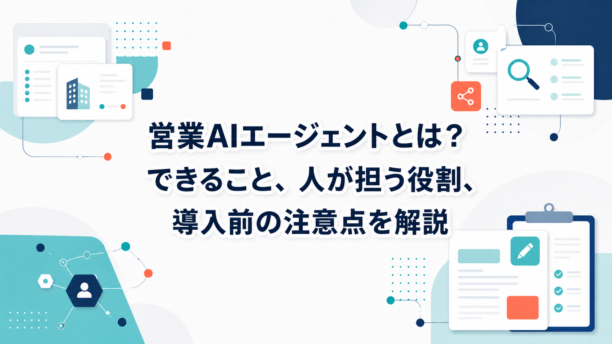
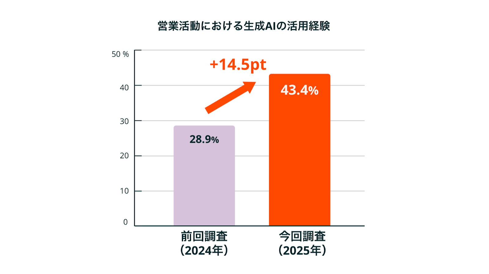
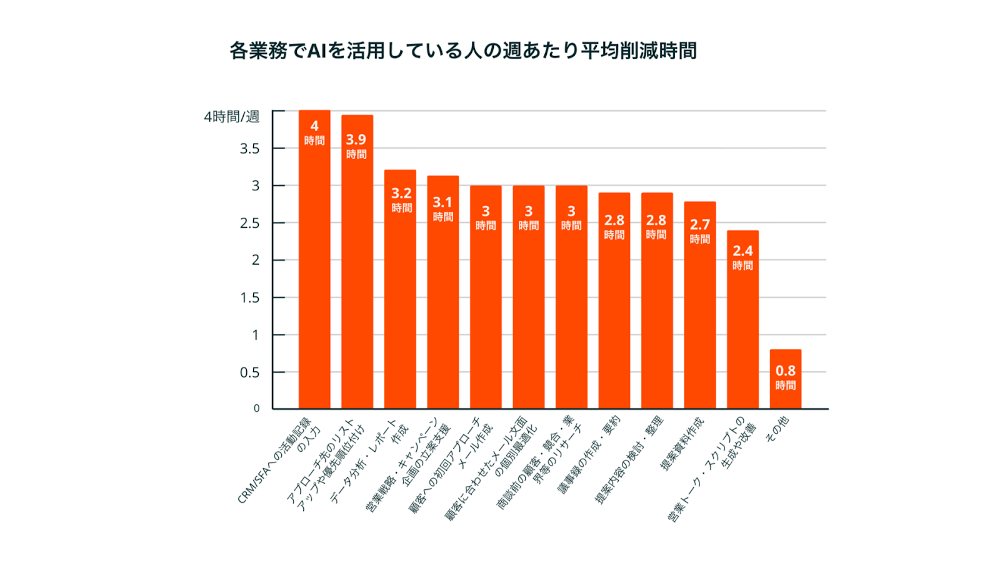
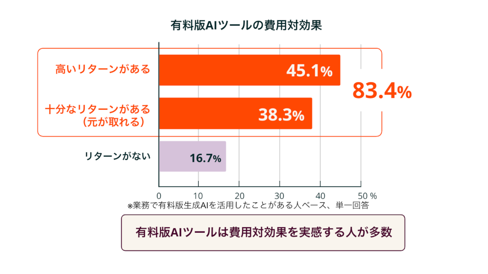

営業AIエージェントとは？できること、人が担う役割、導入前の注意点を解説

みなさんこんにちは、Valorize AI代表の鈴木創也です。
営業活動にAIを取り入れたいと考えたとき、多くの会社では「何をAIに任せられるのか」「営業担当者の仕事はどう変わるのか」「どこまで自動化してよいのか」という疑問が出てきます。
文章作成だけなら生成AIチャットでもできます。顧客情報の管理だけならSFAやCRMでもできます。営業AIエージェントを考えるときに重要なのは、単発の文章作成やデータ保管ではなく、営業担当者が行っている調査、情報整理、仮説作成、アプローチ文の作成などを、営業活動の流れに沿ってどこまで補助できるかです。
この記事では、営業AIエージェントの意味、できること、導入するメリット、人間が確認すべきこと、選び方までを整理します。BtoB新規開拓を中心に、リスト作成、企業調査、提案仮説、個別アプローチ準備でAIをどう活用できるかを解説します。
営業AIエージェントが注目される背景

営業AIエージェントが注目される背景には、買い手側と売り手側の両方で生成AIの利用が広がっていることがあります。HubSpot Japanの「日本の営業に関する意識・実態調査2026」では、BtoBの購買検討時に情報源として生成AIを使う買い手の割合が、2024年の4.3%から2025年は11.7%へと約2.7倍に増えたとされています。購買検討時に生成AIを活用したことがある買い手は36.7%で、生成AIはすでに情報収集や候補整理の一部になり始めています。
同調査では、生成AIを活用した買い手のうち、52.4%が「生成AIで得た情報をきっかけに当初検討していなかった製品を候補に加えた」、55.3%が「生成AIで得た情報が最終的な意思決定に影響した」と回答しています。これは、営業担当者が商談で初めて説明する前に、買い手がAIを使って課題整理、情報収集、候補リスト作成を進めている可能性があるということです。営業側は、接触件数を増やすだけでなく、買い手がすでにどの情報に触れ、何を比較しているかを踏まえた提案を用意する必要があります。
売り手側でも生成AIの利用は進んでいます。営業担当者および営業責任者の生成AI活用率は、1年で28.9%から43.4%へと14.5ポイント増加しました。生成AI活用経験者の55.6%は週1回以上利用しており、内訳は「ほぼ毎日」が15.3%、「週1〜4日」が40.2%です。使われているツールはChatGPTが75.4%で最多、Geminiが38.6%、Copilotが34.4%と続きます。営業現場で生成AIを試す段階から、日常業務に組み込む段階へ移りつつあります。
一方で、生成AIが広がっても、営業担当者の役割がなくなるわけではありません。HubSpotの調査では、買い手の81.2%が営業担当者だからこそ提供できる価値に期待しており、個別事情を汲んだ提案、潜在ニーズの引き出し、共感や気配りが求められているとされています。一般的な情報提供はAIや検索で補える場面が増える一方で、自社固有の状況を理解した提案や、意思決定の背景を踏まえた対話の重要性はむしろ高まっています。
営業AIエージェントでできること
営業AIエージェントでできることは、導入するサービスや連携するデータによって異なります。BtoB新規開拓では、主に次のような活用が考えられます。
- ターゲット条件の整理
- 企業リストの作成
- 企業情報やニュースの調査
- 顧客ごとの課題仮説の作成
- 自社サービスとの接点整理
- メールや問い合わせフォーム文面の作成補助
- 展示会やイベントで接点を持った企業への個別連絡準備
- 商談前の情報整理
- CRMやSFAへの記録補助
たとえば、人間が「従業員数100名以上の製造業で、特定地域に拠点を持つ企業に提案したい」といったターゲット条件を決めます。AIは、その条件に合う企業の整理、各社の事業内容や最近の動きの確認、自社サービスと関連しそうな論点の抽出、初回連絡文のたたき台作成を担います。
HubSpotの調査でも、生成AIを活用している業務別の週あたり平均削減時間として、「CRM/SFAへの活動記録の入力」が4.0時間、「アプローチ先のリストアップや優先順位付け」が3.9時間とされています。どちらも営業担当者の判断そのものではなく、記録、整理、抽出、優先順位付けといった周辺作業です。営業AIエージェントは、こうした繰り返し発生する作業を補助することで、営業担当者が次の行動を決めやすい状態を作ります。

この流れでは、人間が狙う市場や条件を決め、AIが実行に必要な調査と下書き作成を肩代わりします。営業担当者は、AIが出した情報を確認したうえで、どの企業へ、どの表現で、どの順番で連絡するかを判断します。
営業AIエージェントを使うメリット
営業AIエージェントのメリットは、単なる作業時間の削減にとどまりません。営業担当者が、顧客へのアプローチや商談準備に時間を使いやすくなることに価値があります。
調査や下準備にかかる工数を減らせる
新規開拓では、連絡する前に、企業情報の確認、担当部署の推定、提案理由の整理、文面作成など多くの準備作業が発生します。これらをすべて手作業で行うと、営業担当者は準備作業に時間を取られ、最も重要な顧客へのアプローチに使える時間が減ってしまいます。HubSpotの調査では、生成AIをほぼ毎日利用する人は週平均3.6時間を削減しており、月1日の利用者の約1.3時間よりも大きな削減効果が出ています。
個社ごとの提案準備をしやすくなる
買い手が求めているのは、誰にでも当てはまる説明ではなく、自社の事情に即した提案です。AIを使えば、企業ごとの公開情報や接点情報を整理し、なぜその企業に連絡するのかを考える材料をそろえやすくなります。AIを継続的に使うほど、営業担当者は調査や下書きよりも、顧客理解や提案判断に時間を戻しやすくなります。
営業の属人化を減らしやすくなる
経験豊富な担当者だけが頭の中で行っていた調査や仮説立てを、一定の手順として残しやすくなることもメリットです。どの情報を見て、どのような理由で連絡したのかが残れば、チーム内で改善もしやすくなります。

投資対効果の面でも、営業現場でAIを継続利用する意味はあります。HubSpotの調査では、有料版AIツールについて「高いリターンがある」が45.1%、「十分なリターンがある」が38.3%で、合計83.4%が費用対効果を実感しています。営業AIエージェントを導入するときも、単にツールを入れるだけではなく、どの業務で使い、どれだけ営業担当者の時間を戻せたかまで見ていくことが重要です。
営業AIエージェントで人間が確認すべきこと
営業AIエージェントを導入するときに重要なのは、AIに任せる作業と、人間が確認する作業を分けることです。
AIは、調査、整理、仮説作成、文面のたたき台作成に向いています。営業戦略、ターゲット判断、提案の最終判断、顧客との信頼関係構築についても、AIは情報整理や選択肢の提示という形で役立ちます。ただし、最終的にどの企業へ連絡するのか、どの提案を届けるのか、どの表現なら相手企業に失礼がないのかは、人間が確認する必要があります。
特に、顧客に送る文面や提案内容は、相手企業に直接届くものです。AIが作った文章を確認せずに送ると、事実誤認、不自然な表現、相手企業の状況と合わない提案が混ざる可能性があります。営業成果だけでなく、企業の信用にも関わるため、送信前の確認を省くべきではない場面も多く存在します。
総務省・経済産業省の「AI事業者ガイドライン」でも、AI利用における人間中心、安全性、透明性、アカウンタビリティなどの観点が整理されています。営業AIエージェントを使う場合も、AIの出力をそのまま正解として扱わず、人間が確認し、責任を持って使う運用が必要です。
導入前に確認すべきリスクと注意点
営業AIエージェントを導入する前には、少なくとも四つの点を確認する必要があります。
AIに任せる範囲
リスト作成、企業調査、文面作成、送信前確認のうち、どこまでをAIに任せるのかを決めます。範囲が曖昧なまま導入すると、現場ごとに使い方がばらつきます。営業AIエージェントを導入する前に、AIに任せる作業と人間が確認する作業を切り分けておく必要があります。
情報の正確性
企業情報、部署名、ニュース、担当者情報などの重要情報は、出典や確認方法を明確にします。AIはもっともらしい文章を作れますが、常に正しいとは限りません。情報に誤りがあると、連絡文や提案内容の信頼性が下がります。
顧客情報や営業情報の扱い
営業活動では、顧客名、担当者情報、商談履歴、提案内容などの重要な情報を扱います。どのデータをAIに連携するのか、誰が閲覧できるのか、どの範囲で利用するのかを決める必要があります。
KPIと運用ルール
営業AIエージェントを入れた結果、何を改善したいのかを決めなければ、成果判断が曖昧になります。アプローチ準備時間、個別文面の作成数、商談化率、返信率、営業担当者の行動量など、目的に合った指標を設計します。導入前に、使い方だけでなく、改善を見る指標と運用ルールも決めておくことが重要です。
営業AIエージェントの選び方
営業AIエージェントを選ぶときは、最初に「どの営業プロセスを効率化したいのか」を決めるべきです。
新規開拓を強化したいのか、商談記録を効率化したいのか、営業教育を補助したいのか、既存顧客へのフォローを改善したいのかによって、必要な機能は変わります。目的を絞らないまま導入すると、営業現場では何に使えばよいのかが分からず、利用が定着しにくくなります。
BtoB新規開拓であれば、リスト作成、企業調査、提案仮説、アプローチ文作成までを一連の流れで扱えるかを確認するとよいでしょう。個社ごとの調査と文面作成が分断されていると、営業担当者が情報をつなぎ直す必要があります。
また、セキュリティ、既存のCRMやSFAとの連携、サポート体制、運用設計の相談可否も確認すべきです。最初から全社導入するのではなく、対象チームや対象業務を絞って試し、営業現場で使える形に調整してから広げる方が現実的です。
BtoB新規開拓で活用しやすい領域
BtoB新規開拓では、商談に入る前の準備が成果に大きく影響します。ターゲットを決め、企業リストを作り、企業情報を調べ、提案仮説を立て、初回連絡の文面を用意する。こうした準備に時間がかかるほど、営業担当者は顧客へのアプローチや商談準備に集中しにくくなります。
AIが得意なのは、公開情報の整理、企業ごとの特徴抽出、自社サービスとの接点整理、文面のたたき台作成です。これらは、人間の判断材料を増やし、営業担当者が次の行動を決めやすくする作業です。
重要なのは、AIに任せる順序です。まず人間が営業戦略とターゲット条件を決めます。そのうえで、AIが調査や整理、提案準備を行います。最後に、人間が内容を確認し、顧客に送るべきか、どの表現が適切かを判断します。
この役割分担を前提にすれば、営業担当者は調査や下書きに時間を使いすぎず、顧客理解、提案判断、実際のアプローチに集中しやすくなります。
Sales Triggerでできること
私たちValorize AIが提供するSales Triggerは、セールスの半自動化AIエージェントサービスです。人間が営業戦略やターゲット設計を行い、AIが営業前工程の準備を担うことで、新規開拓に必要な準備とアプローチを進めやすくします。
すでに自社で営業リストやリードを保有している場合は、その企業に対して個別に情報を調査し、自社の事業内容に合わせた提案文を作成できます。展示会やイベントで接点を持った企業、過去に問い合わせがあった企業、休眠顧客に対しても、一社ごとの状況に合わせた連絡準備に活用できます。
まだ十分な営業リストがない場合は、人間がセグメントやターゲット条件を決めたうえで、条件に合う企業リストを作るところから始められます。その後、企業情報の調査、提案仮説の整理、メールや問い合わせフォームで使う文面の作成までを一連の流れで進められます。
Sales Triggerは、各社に合わせた提案を適切なタイミングで届けるために、営業前工程を整えます。アプローチ文は送信前に人間がレビューし、内容に問題がないことを確認してから使う運用が基本です。
BtoB新規開拓の質と量を高めたい企業、営業活動の属人化を減らしたい企業、営業担当者が次に取るべきアクションで迷う時間を減らしたい企業は、Sales Triggerのサービスページをご確認ください。
https://salestrigger.valorize-ai.com/
まとめ
営業AIエージェントは、営業活動の中にある調査、整理、仮説作成、文面作成、記録といった作業をAIで補助する仕組みです。
BtoB新規開拓では、商談前の準備で営業成果が大きく変わります。誰に連絡するのか、なぜ連絡するのか、どのような提案が考えられるのかを整理できれば、営業担当者は顧客へのアプローチや商談判断に時間を使いやすくなります。
導入時には、AIに任せる範囲、人間が確認する範囲、顧客情報の扱い、セキュリティ、KPIを事前に決めることが重要です。AIに任せる作業と人間が判断する作業を分けることで、営業活動の量と質を両立しやすくなります。